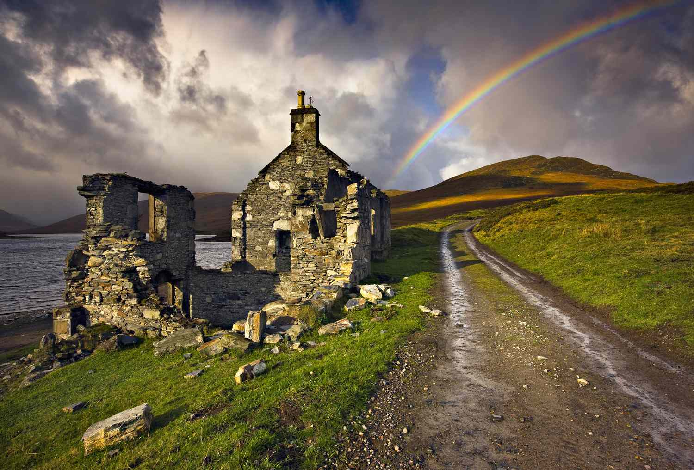
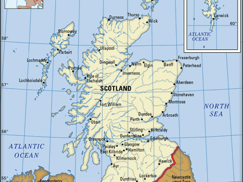

| index |
Sport |
Gastronomy |
Quality of life |
Nature |
Culture |
Biota |
| Scotland’s biota reflects the northern European Palearctic region, with key habitats including Caledonian forests, heather moorland, and coastal machair, though only about 1% of its original forest remains. The country supports diverse wildlife, including 62 mammal species, important seabird colonies, and the UK’s only endemic vertebrate, the Scottish crossbill. Scottish waters are highly productive, hosting around 40,000 marine species, while about 14,000 insect species live on land. Many large mammals became extinct in historic times. |
 |
Climate |
| Scotland has a temperate but highly changeable climate, made milder than other regions at similar latitudes by the Gulf Stream. Temperatures are generally cooler than the rest of the UK, with average winter highs of about 5–6 °C and summer highs of 20–25 °C. Scotland has experienced temperature extremes ranging from −27.2 °C to 32.9 °C. Rainfall varies greatly, with the western Highlands among the wettest areas in Europe due to orographic rainfall, while eastern regions are much drier. Snow is uncommon in lowland areas but increases with altitude. |
 |
Geography |
| Scotland is located in north-west Europe and forms the northern third of Great Britain. It includes around 790 islands, notably the Shetland, Orkney, and Outer Hebrides. Scotland shares its only land border with England, while Ireland lies nearby to the southwest and Norway to the northeast across the North Sea. |
 |
Land |
About 60 percent of the land is rugged highlands with severe weather 20 percent is fertile industrial lowlands and 20 percent is rolling southern uplands with volcanic peaks The country covers 78,772 km² and has an 11,800 km coastline jagged in the west straighter and sandy in the east with rare machair along the shore |
 |
Water |
Scotland is surrounded by the North Sea to the east and the Atlantic Ocean to the north and west and has many rivers and lochs Water is abundant with the River Tay as the longest at 193 km and Loch Lomond as the largest at 71.1 km² Lakes are usually called lochs and all water needs are met from these sources with treated tap water included in council tax |
 |
Climate change and enviromental protection |
Climate change seriously affects Scotland with rising temperatures stronger storms and higher sea levels and it is managed by the Scottish government through its own climate laws Environmental protection is handled by national agencies that conserve nature and regulate pollution water waste and flood risks |
 |